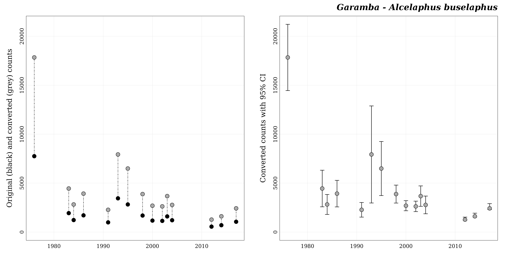
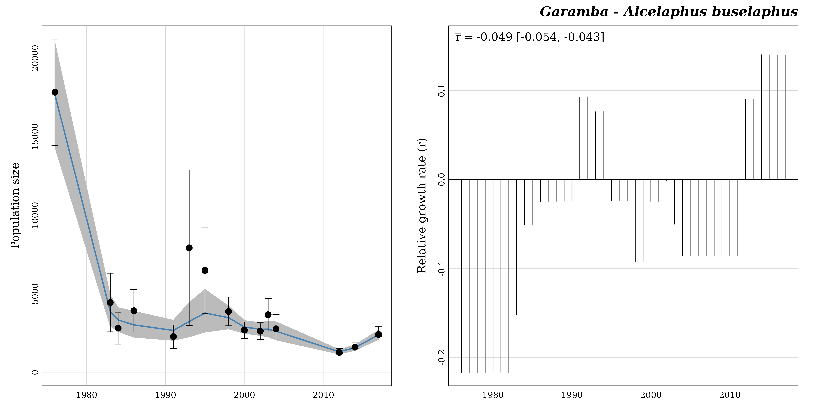

The goal of the R package popbayes is to fit population trajectories over time from counts of individuals collected at various dates and with a variety of methods. It does so under a Bayesian framework where the primary quantity being modeled is the rate of increase between successive years (or any other time units for that matter, the one used for date). The package can deal with multiple species and multiple locations presented in a single data set, but each count series made of the counts relative to one species at one location will be processed independently.
The strength of popbayes is to handle, in a single series, counts collected under different types of surveys (aerial vs ground surveys), and estimated by different census methods (total counts, sampling counts, and even guesstimates [i.e. expert estimates]).
Before using this package, users need to install the freeware JAGS.
The workflow of popbayes consists in three main steps:
format_data())fit_trend())plot_trend())The package also provides a lot of functions to handle individual count series and model outputs. The following figure shows a more complete usage of the package.
Framework of popbayes
The package popbayes comes with an example dataset: garamba. It contains counts of individuals from 10 African mammal species surveyed in the Garamba National Park (Democratic Republic of the Congo) from 1976 to 2017.
## Define filename path ----
file_path <- system.file("extdata", "garamba_survey.csv", package = "popbayes")
## Read CSV file ----
garamba <- read.csv(file = file_path)| location | species | date | stat_method | field_method | count | lower_ci | upper_ci | pref_field_method | conversion_A2G | rmax |
|---|---|---|---|---|---|---|---|---|---|---|
| Garamba | Alcelaphus buselaphus | 1976 | S | A | 7750 | 6280 | 9220 | G | 2.302 | 0.2748 |
| Garamba | Alcelaphus buselaphus | 1983 | S | A | 1932 | 1120 | 2744 | G | 2.302 | 0.2748 |
| Garamba | Alcelaphus buselaphus | 1984 | S | A | 1224 | 782 | 1666 | G | 2.302 | 0.2748 |
| Garamba | Alcelaphus buselaphus | 1986 | S | A | 1705 | 1116 | 2294 | G | 2.302 | 0.2748 |
| Garamba | Alcelaphus buselaphus | 1991 | S | A | 987 | 663 | 1311 | G | 2.302 | 0.2748 |
| Garamba | Alcelaphus buselaphus | 1993 | S | A | 3444 | 1290 | 5598 | G | 2.302 | 0.2748 |
| Garamba | Alcelaphus buselaphus | 1995 | S | A | 2819 | 1620 | 4018 | G | 2.302 | 0.2748 |
| Garamba | Alcelaphus buselaphus | 1998 | S | A | 1685 | 1287 | 2083 | G | 2.302 | 0.2748 |
| Garamba | Alcelaphus buselaphus | 2000 | S | A | 1169 | 945 | 1393 | G | 2.302 | 0.2748 |
| Garamba | Alcelaphus buselaphus | 2002 | S | A | 1139 | 907 | 1371 | G | 2.302 | 0.2748 |
| Garamba | Alcelaphus buselaphus | 2003 | S | A | 1595 | 1142 | 2048 | G | 2.302 | 0.2748 |
| Garamba | Alcelaphus buselaphus | 2004 | S | A | 1204 | 811 | 1597 | G | 2.302 | 0.2748 |
| Garamba | Alcelaphus buselaphus | 2012 | T | A | 552 | NA | NA | G | 2.302 | 0.2748 |
| Garamba | Alcelaphus buselaphus | 2014 | T | A | 698 | NA | NA | G | 2.302 | 0.2748 |
| Garamba | Alcelaphus buselaphus | 2017 | T | A | 1051 | NA | NA | G | 2.302 | 0.2748 |
| Garamba | Giraffa camelopardalis | 1976 | S | A | 350 | 100 | 600 | A | 3.011 | 0.1750 |
| Garamba | Giraffa camelopardalis | 1983 | S | A | 175 | 12 | 338 | A | 3.011 | 0.1750 |
| Garamba | Giraffa camelopardalis | 1984 | S | A | 237 | 93 | 381 | A | 3.011 | 0.1750 |
| Garamba | Giraffa camelopardalis | 1986 | S | A | 153 | 13 | 293 | A | 3.011 | 0.1750 |
| Garamba | Giraffa camelopardalis | 1991 | S | A | 346 | 143 | 549 | A | 3.011 | 0.1750 |
This dataset has a typical structure with a location field (location), a species name field (species), a date field (date), and a count field (count).
In addition to the fields location, species, date, and count, a fourth field is mandatory: stat_method. This field specifies the census method that produced the count. It can be T for a total count, G for a guesstimate (i.e. expert estimate), or S for a sampling count.
To be usable by the Bayesian model, individual counts are to be accompanied by information on precision in the form of a 95% confidence interval. If counts are :
T or G, a confidence interval will be computed automatically by the function format_data() according respectively to the following formulas:\[ CI_{(T)} = [\ 0.95 \times count\ ; 1.20 \times count\ ] \] \[ CI_{(G)} = [\ 0.80 \times count\ ; 1.20 \times count\ ] \]
S, users need to supply a measure of precision. Precision is preferably provided in the form of a 95% CI by means of two fields: lower_ci and upper_ci (as in the garamba dataset). Alternatively, it may also be given in the form of a standard deviation (sd), a variance (var), or a coefficient of variation (cv). Note that precision metrics can be different between counts. For instance, some S counts may have an sd value and others lower_ci and upper_ci. In that case, three precision columns would be required (lower_ci, upper_ci, and sd). An S count with no measure of precision will be detected as an anomaly by format_data() by default. The option ‘na.rm = TRUE’ may be used to automatically remove such counts from the series. If it is desirable to maintain such counts in the count series, we suggest to enter a value for the coefficient of variation, e.g. the average coefficient of variation of the other counts in the series.Another optional column, field_method, may be provided. It refers to the type of survey used to collect data. This can be A for aerial survey or G for ground survey. This column becomes mandatory as soon as both field methods are present in a series.
The detectability of a species is indeed strongly dependent on the survey method and each species has its own preferred field method, the one that is assumed to provide estimates closer to the truth. So, even if a series is homogeneous relative to the field method, it is recommended to provide the column field_method if counts have been collected under the not preferred field method. That will force conversion towards the preferred field method.
The function format_data() will convert counts (and 95% CI bounds) into their equivalent in the preferred field method for the species. To this aim, two pieces of information are required :
pref_field_method: the preferred field method for the species (A or G);conversion_A2G: the multiplicative factor used to convert an aerial count into an equivalent ground count.The package popbayes provides the species_info dataset, which contains these two pieces of information for 15 African mammal species.
data("species_info")| species | category | pref_field_method | conversion_A2G | rmax |
|---|---|---|---|---|
| Aepyceros melampus | MLB | G | 6.747 | 0.4010 |
| Alcelaphus buselaphus | LLB | G | 2.302 | 0.2748 |
| Connochaetes taurinus | LLB | G | 2.302 | 0.2679 |
| Damaliscus lunatus | MLB | G | 6.747 | 0.2990 |
| Eudorcas rufifrons | MLB | G | 6.747 | 0.5270 |
| Giraffa camelopardalis | Giraffe | A | 3.011 | 0.1750 |
| Hippotragus equinus | LLB | G | 2.302 | 0.2420 |
| Kobus ellipsiprymnus | MLB | G | 6.747 | 0.2702 |
| Kobus kob | MLB | G | 6.747 | 0.3802 |
| Loxodonta africana | Elephant | A | 0.659 | 0.1120 |
| Ourebia ourebi | MLB | G | 6.747 | 0.5988 |
| Redunca redunca | MLB | G | 6.747 | 0.4010 |
| Syncerus caffer | LD | A | 0.561 | 0.2080 |
| Tragelaphus derbianus | LLB | G | 2.302 | 0.1500 |
| Tragelaphus scriptus | MLB | G | 6.747 | 0.4487 |
If users work only with species in this table, the package popbayes can automatically retrieve the values of pref_field_method and conversion_A2G from the species_info data set. But for other species, users need to supply the information themselves when running format_data(). These values may be provided as additional fields in the count data set. Care must then be taken that the same value is consistently repeated for each count of the same species. For users with sufficient command of R, we recommend rather to create an independent additional table similar to species_info and to pass it to the function format_data() as the data frame argument info.
Note: Currently format_data() takes its information for count conversion from one source only with priority given to info, then to additional fields in data (if info is not provided), and eventually to the species_info table of the package (when the other two sources are lacking). That means that the source with the highest priority must be complete with respect to the species present in data, as it will be used exclusively to any other source. If, say, you use info, you cannot expect format_data() to retrieve conversion information for a species undocumented in info from the species_info table of the package. However, you can easily construct info from a copy of species_info, which additionally provides a ready template. It suffices to add any species not already in species_info as shown below.
Let’s assume that, in addition to other species present in the package species_info table, we have counts of Taurotragus oryx and Taurotragus derbianus. We can construct info as follows.
## Extract the relevant columns of the package table "species_info" ----
info_from_package <- species_info[ , c("species", "pref_field_method", "conversion_A2G", "rmax")]
## Add the new species ----
new_conversion_info <- data.frame("species" = c("Taurotragus oryx","Taurotragus derbianus"),
"pref_field_method" = "G",
"conversion_A2G" = 2.302,
"rmax" = 0.1500)
## Append the new species ----
info <- rbind(info_from_package, new_conversion_info)
info
#> species pref_field_method conversion_A2G rmax
#> 1 Aepyceros melampus G 6.747 0.4010
#> 2 Alcelaphus buselaphus G 2.302 0.2748
#> 3 Connochaetes taurinus G 2.302 0.2679
#> 4 Damaliscus lunatus G 6.747 0.2990
#> 5 Eudorcas rufifrons G 6.747 0.5270
#> 6 Giraffa camelopardalis A 3.011 0.1750
#> 7 Hippotragus equinus G 2.302 0.2420
#> 8 Kobus ellipsiprymnus G 6.747 0.2702
#> 9 Kobus kob G 6.747 0.3802
#> 10 Loxodonta africana A 0.659 0.1120
#> 11 Ourebia ourebi G 6.747 0.5988
#> 12 Redunca redunca G 6.747 0.4010
#> 13 Syncerus caffer A 0.561 0.2080
#> 14 Tragelaphus derbianus G 2.302 0.1500
#> 15 Tragelaphus scriptus G 6.747 0.4487
#> 16 Taurotragus oryx G 2.302 0.1500
#> 17 Taurotragus derbianus G 2.302 0.1500If you do not have conversion information of your own for a new species, you can rely on the conversion information of species with similar characteristics (for example the two Taurotragus species belong to the category LLB). The package popbayes distinguishes five categories of species:
The field category of the species_info table indicates which species belong to each.
The demographic potential of a species is limited. The intrinsic rate of increase (called rmax) is the maximum increase in log population size that a species can attain in a year.
We strongly recommend using the rmax values while estimating population trend to limit yearly population growth estimated by the model (the default).
As for pref_field_method and conversion_A2G, rmax values (specific to a species) can be provided in an additional field of the count dataset (garamba), as additional field of the info data frame, or internally can be retrieved from the internal dataset of popbayes.
How to find the species rmax value?
According to Sinclair (2003), rmax is related to the body mass of adult females W by the formula:
\[ rmax = 1.375 \times W^{-0.315} \]
Body masses are found in the literature in publications such as Kingdon & Hoffman (2013), Cornelis et al. (2014), Illius & Gordon (1992), Sinclair (1996), Suraud et al. (2012), or Foley & Faust (2010).
If you know the body mass of adult females of the species, you can compute the rmax value with the function w_to_rmax().
Alternatively, rmax can be obtained from previous demographic analyses.
Important note: The intrinsic rate of increase refers to a change over one year. If a different time unit is used for the dates (say a month), the rmax to provide must be adapted (here divided by 12). The rmax values in popbayes cannot be used for time units other than one year.
The first thing that the function format_data() does is to check the validity of the content of the different fields of the count data set. Here we will explore our data to avoid errors when using the function format_data().
In particular, we need to check location and species spelling, date and count field format, and the stat_method and field_method categories.
Check location field
unique(garamba$"location")
#> [1] "Garamba"
sum(is.na(garamba$"location")) # Are there any missing values?
#> [1] 0Field location can be either a character or a factor. It cannot contain any NA values.
Check species field
unique(garamba$"species")
#> [1] "Alcelaphus buselaphus" "Giraffa camelopardalis" "Hippotragus equinus"
#> [4] "Kobus ellipsiprymnus" "Kobus kob" "Loxodonta africana"
#> [7] "Ourebia ourebi" "Redunca redunca" "Syncerus caffer"
#> [10] "Tragelaphus scriptus"
sum(is.na(garamba$"species")) # Are there any missing values?
#> [1] 0
## Are there species absent from the 'species_info' popbayes dataset?
garamba_species <- unique(garamba$"species")
garamba_species[which(!(garamba_species %in% species_info$"species"))]
#> character(0)Field species can be either a character or a factor. It cannot contain any NA values.
Check date field
is.numeric(garamba$"date") # Are dates in a numerical format?
#> [1] TRUE
sum(is.na(garamba$"date")) # Are there any missing values?
#> [1] 0
range(garamba$"date") # What is the temporal extent?
#> [1] 1976 2017Field date must be a numeric. It cannot contain any NA values. This said, the time unit is arbitrary, and fractional values of years (or another unit) are allowed. As long as numeric values are entered, the package will work.
On the other hand, if you have a date format (e.g. ‘2021/05/19’), you need to convert it to a numeric format. For instance:
## Convert a character to a date object ----
x <- as.Date("2021/05/19")
x
#> [1] "2021-05-19"
## Convert a date to a numeric (number of days since 1970/01/01) ----
x <- as.numeric(x)
x
#> [1] 18766
## Check ----
as.Date(x, origin = as.Date("1970/01/01"))
#> [1] "2021-05-19"Other methods exist to convert a date to a numeric format. You may prefer computing the number of days since the first date of your survey. It’s up to you.
Check count field
is.numeric(garamba$"count") # Are counts in a numerical format?
#> [1] TRUE
range(garamba$"count") # What is the range of values?
#> [1] 0 53312
sum(is.na(garamba$"count")) # Are there any missing values?
#> [1] 0Field count must be a positive numeric (zero counts are allowed). NA counts cannot be used for fitting trends. The format_data() function (see below) has an option for dropping them.
Check stat_method field
unique(garamba$"stat_method")
#> [1] "S" "T"
sum(is.na(garamba$"stat_method")) # Are there any missing values?
#> [1] 0Field stat_method can be either a character or a factor. It must contain only T, G, or S categories and cannot contain any NA values.
Check field_method field
unique(garamba$"field_method")
#> [1] "A"
sum(is.na(garamba$"field_method")) # Are there any missing values?
#> [1] 0Field field_method can be either a character or a factor. It must contain only A, or T categories and cannot contain any NA values.
This first popbayes function to use is format_data(). This function provides an easy way to get individual count series ready to be analyzed by the package. It must be used prior to all other functions.
First let’s define the path (relative or absolute) to save objects/results, namely the formatted count series that can be extracted from the data set.
path <- "the_folder_to_store_outputs"The function format_data() has many arguments to provide the names of the columns in the user’s dataset that contain location, species, lower_ci, etc. By default column names are the same as in the Garamba dataset. If your location field, say, is “site”, you’ll need to use the argument location as follows: location = "site".
garamba_formatted <- popbayes::format_data(data = garamba, path = path)
#> ✔ Conversion data found in 'data'.
#> ✔ Detecting 10 count seriesAs said above, if you have to add your own count conversion data, you need specify the names of columns for the preferred field method, the conversion factor, and rmax as this: pref_field_method = "column_with_preferred_field_method", conversion_A2G = "column_with_conversion_A2Gor", rmax = "column_with_conversion_rmax", or alternatively use the argument info: info = "dataframe_with_conversion_info".
Let’s explore the output.
## Class of the object ----
class(garamba_formatted)
#> [1] "list"
## Number of elements (i.e. number of count series) ----
length(garamba_formatted)
#> [1] 10
## Get series names ----
popbayes::list_series(path)
#> [1] "garamba__alcelaphus_buselaphus" "garamba__giraffa_camelopardalis"
#> [3] "garamba__hippotragus_equinus" "garamba__kobus_ellipsiprymnus"
#> [5] "garamba__kobus_kob" "garamba__loxodonta_africana"
#> [7] "garamba__ourebia_ourebi" "garamba__redunca_redunca"
#> [9] "garamba__syncerus_caffer" "garamba__tragelaphus_scriptus"Let’s work with the count series "garamba__alcelaphus_buselaphus". We can use the function filter_series().
## Retrieve series by species and location ----
a_buselaphus <- popbayes::filter_series(data = garamba_formatted,
species = "Alcelaphus buselaphus",
location = "Garamba")
#> ✔ Found 1 series with 'Alcelaphus buselaphus' and 'Garamba'.Let’s display the series content.
print(a_buselaphus)
#> $garamba__alcelaphus_buselaphus
#> $garamba__alcelaphus_buselaphus$location
#> [1] "Garamba"
#>
#> $garamba__alcelaphus_buselaphus$species
#> [1] "Alcelaphus buselaphus"
#>
#> $garamba__alcelaphus_buselaphus$dates
#> [1] 1976 1983 1984 1986 1991 1993 1995 1998 2000 2002 2003 2004 2012 2014 2017
#>
#> $garamba__alcelaphus_buselaphus$n_dates
#> [1] 15
#>
#> $garamba__alcelaphus_buselaphus$stat_methods
#> [1] "S" "T"
#>
#> $garamba__alcelaphus_buselaphus$field_methods
#> [1] "A"
#>
#> $garamba__alcelaphus_buselaphus$pref_field_method
#> [1] "G"
#>
#> $garamba__alcelaphus_buselaphus$conversion_A2G
#> [1] 2.302
#>
#> $garamba__alcelaphus_buselaphus$rmax
#> [1] 0.2748
#>
#> $garamba__alcelaphus_buselaphus$data_original
#> location species date stat_method field_method count_orig
#> 1 Garamba Alcelaphus buselaphus 1976 S A 7750
#> 2 Garamba Alcelaphus buselaphus 1983 S A 1932
#> 3 Garamba Alcelaphus buselaphus 1984 S A 1224
#> 4 Garamba Alcelaphus buselaphus 1986 S A 1705
#> 5 Garamba Alcelaphus buselaphus 1991 S A 987
#> 6 Garamba Alcelaphus buselaphus 1993 S A 3444
#> 7 Garamba Alcelaphus buselaphus 1995 S A 2819
#> 8 Garamba Alcelaphus buselaphus 1998 S A 1685
#> 9 Garamba Alcelaphus buselaphus 2000 S A 1169
#> 10 Garamba Alcelaphus buselaphus 2002 S A 1139
#> 11 Garamba Alcelaphus buselaphus 2003 S A 1595
#> 12 Garamba Alcelaphus buselaphus 2004 S A 1204
#> 13 Garamba Alcelaphus buselaphus 2012 T A 552
#> 14 Garamba Alcelaphus buselaphus 2014 T A 698
#> 15 Garamba Alcelaphus buselaphus 2017 T A 1051
#> lower_ci_orig upper_ci_orig
#> 1 6280 9220
#> 2 1120 2744
#> 3 782 1666
#> 4 1116 2294
#> 5 663 1311
#> 6 1290 5598
#> 7 1620 4018
#> 8 1287 2083
#> 9 945 1393
#> 10 907 1371
#> 11 1142 2048
#> 12 811 1597
#> 13 NA NA
#> 14 NA NA
#> 15 NA NA
#>
#> $garamba__alcelaphus_buselaphus$data_converted
#> location species date stat_method field_method count_conv
#> 1 Garamba Alcelaphus buselaphus 1976 S A 17840.500
#> 2 Garamba Alcelaphus buselaphus 1983 S A 4447.464
#> 3 Garamba Alcelaphus buselaphus 1984 S A 2817.648
#> 4 Garamba Alcelaphus buselaphus 1986 S A 3924.910
#> 5 Garamba Alcelaphus buselaphus 1991 S A 2272.074
#> 6 Garamba Alcelaphus buselaphus 1993 S A 7928.088
#> 7 Garamba Alcelaphus buselaphus 1995 S A 6489.338
#> 8 Garamba Alcelaphus buselaphus 1998 S A 3878.870
#> 9 Garamba Alcelaphus buselaphus 2000 S A 2691.038
#> 10 Garamba Alcelaphus buselaphus 2002 S A 2621.978
#> 11 Garamba Alcelaphus buselaphus 2003 S A 3671.690
#> 12 Garamba Alcelaphus buselaphus 2004 S A 2771.608
#> 13 Garamba Alcelaphus buselaphus 2012 T A 1270.704
#> 14 Garamba Alcelaphus buselaphus 2014 T A 1606.796
#> 15 Garamba Alcelaphus buselaphus 2017 T A 2419.402
#> lower_ci_conv upper_ci_conv field_method_conv
#> 1 14456.560 21224.440 G
#> 2 2578.240 6316.688 G
#> 3 1800.164 3835.132 G
#> 4 2569.032 5280.788 G
#> 5 1526.226 3017.922 G
#> 6 2969.580 12886.596 G
#> 7 3729.240 9249.436 G
#> 8 2962.674 4795.066 G
#> 9 2175.390 3206.686 G
#> 10 2087.914 3156.042 G
#> 11 2628.884 4714.496 G
#> 12 1866.922 3676.294 G
#> 13 1207.169 1524.845 G
#> 14 1526.456 1928.155 G
#> 15 2298.432 2903.282 GThe first elements of the list provide a summary of the count series.
If we compare the two last data frames (data_original and data_converted), they are not identical. The function format_data() has 1) computed 95% CI boundaries for total counts (coded T in the column stat_method), and 2) converted all counts (and CI boundaries) to their equivalent in the preferred field method (from A to G) by applying the conversion factor of 2.302.
The Bayesian model will use counts and precision measures from the data_converted data frame.
Before fitting the population size trend we can visualize the count series with plot_series().
popbayes::plot_series("garamba__alcelaphus_buselaphus", path = path)
The function format_data() has also exported the count series as .RData files in the path folder where they have been dispatched into sub-folders, one per series.
list.files(path, recursive = TRUE)#> [1] "garamba__alcelaphus_buselaphus/garamba__alcelaphus_buselaphus_data.RData"
#> [2] "garamba__giraffa_camelopardalis/garamba__giraffa_camelopardalis_data.RData"
#> [3] "garamba__hippotragus_equinus/garamba__hippotragus_equinus_data.RData"
#> [4] "garamba__kobus_ellipsiprymnus/garamba__kobus_ellipsiprymnus_data.RData"
#> [5] "garamba__kobus_kob/garamba__kobus_kob_data.RData"
#> [6] "garamba__loxodonta_africana/garamba__loxodonta_africana_data.RData"
#> [7] "garamba__ourebia_ourebi/garamba__ourebia_ourebi_data.RData"
#> [8] "garamba__redunca_redunca/garamba__redunca_redunca_data.RData"
#> [9] "garamba__syncerus_caffer/garamba__syncerus_caffer_data.RData"
#> [10] "garamba__tragelaphus_scriptus/garamba__tragelaphus_scriptus_data.RData"These *_data.RData files (count series) can be imported later by running the function read_series().
a_buselaphus <- popbayes::read_series("garamba__alcelaphus_buselaphus", path = path)The function fit_trend() fits population trajectories over time from counts of individuals formatted by format_data(). It does so under a Bayesian framework where the primary quantity being modeled is the annual rate of increase (more generally, the rate of increase per the time unit used for dates).
This function only works on the output of format_data() (or filter_series()).
Here is the default usage of the function fit_trend():
a_buselaphus_bugs <- popbayes::fit_trend(a_buselaphus, path = path)The function returns an n-element list (where n is the number of count series). Each element of the list is a BUGS output as provided by JAGS. It has also exported these BUGS outputs as .RData files in the path folder where they have been dispatched into sub-folders, one per series.
These *_bugs.RData files (BUGS outputs) can be imported later by running the function read_bugs().
a_buselaphus_bugs <- popbayes::read_bugs("garamba__alcelaphus_buselaphus", path = path)The function diagnostic() allows to check if estimation of all parameters of the model has converged. This diagnostic is performed by comparing the Rhat value of each parameter to a threshold (default is 1.1).
popbayes::diagnostic(a_buselaphus_bugs)
#> All models have converged.Finally we can use the function plot_trend() to visualize model predictions and estimated yearly relative growth rates.
popbayes::plot_trend("garamba__alcelaphus_buselaphus", path = path)
Cornelis D et al. (2014) Species account: African buffalo (Syncerus caffer). In: Ecology, Evolution and Behaviour of Wild Cattle: Implications for Conservation (Eds M Melletti & J Burton). Cambridge University Press, Cambridge. DOI: 10.1017/CBO9781139568098.
Foley CAH & Faust LJ (2010) Rapid population growth in an elephant Loxodonta africana population recovering from poaching in Tarangire National Park, Tanzania. Oryx, 44, 205-212. DOI: 10.1017/S0030605309990706.
Illius AW & Gordon IJ (1992) Modelling the nutritional ecology of ungulate herbivores: evolution of body size and competitive interactions. Oecologia, 89, 428-434. DOI: 10.1017/S0030605309990706.
Kingdon J & Hoffman M (2013) Mammals of Africa. Volume VI: Pigs, Hippopotamuses, Chevrotain, Giraffes, Deer and Bovids. Bloomsbury Publishing, London, United Kingdom, 680 pp.
Sinclair ARE (1996) Mammal populations: fluctuation, regulation, life history theory, and their implications for conservation. In: Frontiers of population ecology (Eds RB Floyd & AW Sheppard), pp. 127–154. CSIRO: Melbourne, Australia.
Sinclair (2003) Mammal population regulation, keystone processes and ecosystem dynamics. Philosophical Transactions: Biological Sciences, 358, 1729-1740. DOI: 10.1098/rstb.2003.1359.
Suraud JP et al. (2012) Higher than expected growth rate of the endangered West African giraffe Giraffa camelopardalis peralta: a successful human–wildlife cohabitation. Oryx, 46, 577-583. DOI: 10.1017/S0030605311000639.